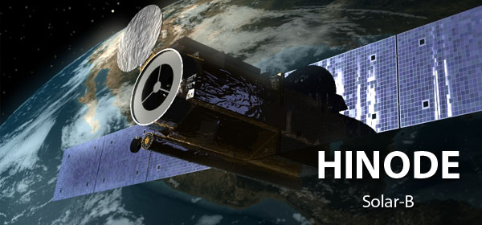

Student sam astrofizike na matematičkom fakultetu u Beogradu. Što znači da sam studije upisao (preturam po sobi i tražim indeks) 2013. Pre toga sam išao u Gimnaziju u Kruševcu.
Trenutno "radim" u Istraživačkoj Stanici Petnica (ISP) kao mlađi saradnik na seminaru astronomije.
Takodje radim kao Junior DevOps u ITEkako.
Kao polaznik u ISP sam radio sa Ivanom Milićem na projektu "Distribucija temperature u aktivnom regionu Sunčeve površine". Moglo bi se reći da sam tada zavoleo Sunce. Sada učim o spektropolarimetrijskim podacima i šta sve može da se radi sa njima.
Omiljeni teleskop - HINODE
It's big and shiny and it's studying Sun...
Big time linux fan/user.
Programiram u pythonu, znam malo C/C++, IDL i bash/zsh shell scripting.
Ovo treba doraditi, dodati CV i slicno. TBD